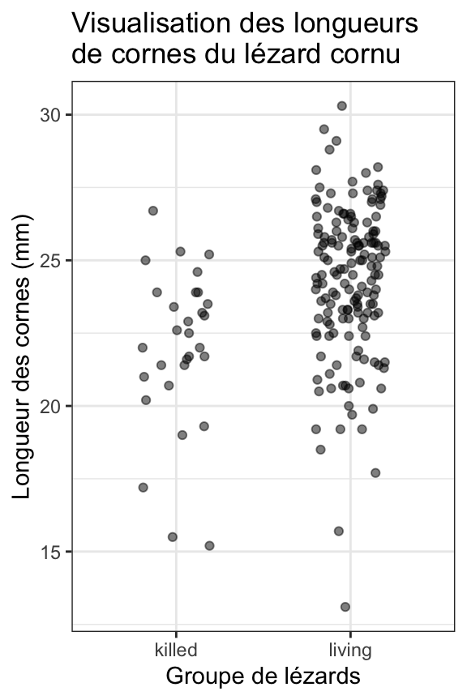
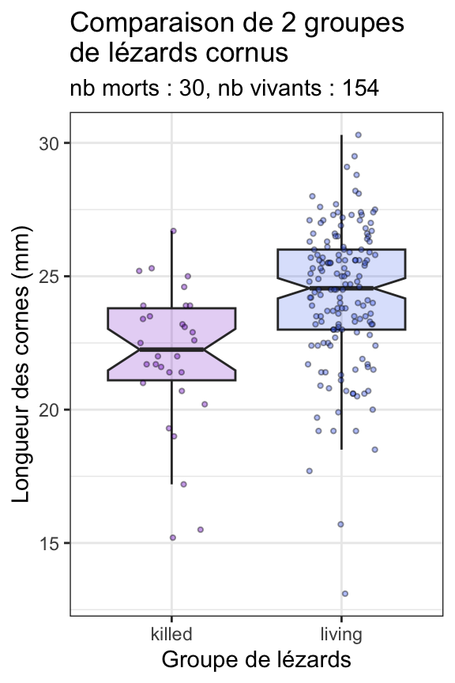

library(tidyverse)
library(readxl)
library(skimr)
library(car)
library(palmerpenguins)11.1 Pré-requis
Comme pour chaque nouveau chapitre, je vous conseille de travailler dans un nouveau script que vous placerez dans votre répertoire de travail, et dans une nouvelle session de travail (Menu Session > Restart R). Inutile en revanche de créer un nouveau Rproject : vos pouvez tout à fait avoir plusieurs script dans le même répertoire de travail et pour un même Rproject. Comme toujours, consultez le livre en ligne du semestre 3 si vous ne savez plus comment faire.
Si vous êtes dans une nouvelle session de travail (ou que vous avez quitté puis relancé RStudio), vous devrez penser à recharger en mémoire les packages utiles. Dans ce chapitre, vous aurez besoin d’utiliser :
- le
tidyverse(Wickham 2023), qui comprend notamment le packagereadr(Wickham, Hester, et Bryan 2023), pour importer facilement des fichiers.csvau formattibble, le packagedplyr(Wickham, François, et al. 2023), pour manipuler des tableaux, et le packageggplot2(Wickham, Chang, et al. 2023) pour les représentations graphiques. readxl(Wickham et Bryan 2023), pour importer facilement des fichiers Excel au formattibble.skimr(Waring et al. 2022), qui permet de calculer des résumés de données très informatifs.car(Fox, Weisberg, et Price 2023), qui permet d’effectuer le test de comparaison des variances de Levene.- le package
palmerpenguins(Horst, Hill, et Gorman 2022) pour accéder au jeu de donnéespenguinsque nous utiliserons pour les exercices d’application.
Vous aurez également besoin des jeux de données suivants que vous pouvez dès maintenant télécharger dans votre répertoire de travail :
Enfin, je spécifie ici une fois pour toutes le thème que j’utiliserai pour tous les graphiques de ce chapitre. Libre à vous de choisir un thème différent ou de vous contenter du thème proposé par défaut :
theme_set(theme_bw())11.2 Contexte
On s’intéresse maintenant aux méthodes permettant de comparer la moyenne de deux groupes ou de deux traitements dans la cas d’échantillons indépendants. Au contraire de la situation décrite dans le Chapitre 10, dans ce type de design expérimentaux, les deux traitements sont appliqués à des échantillons indépendants issus de 2 groupes ou populations distincts. Chaque individu collecté, ou chaque unité expérimentale observée, ne fournit qu’une seule valeur, indépendante de toutes les autres.
Cette situation est extrêmement classique dans le domaine de l’écologie au sens large. Ainsi, par exemple, lorsque l’on souhaite comparer 2 sites, on réalise des prélèvements dans chacun des 2 sites. Chaque prélèvement ne fournit qu’une valeur pour l’un des 2 sites.
Ici, nous allons examiner une espèce intéressante, le lézard cornu Phrynosoma mcallii, qui possède une frange de piquants autour de la tête. Une équipe d’herpétologues (Young, Brodie, et Brodie 2004) a étudié la question suivante : des piquants plus longs autour de la tête protègent-ils le lézard cornu de son prédateur naturel, la pie grièche migratrice Lanius ludovicianus ? Ce prédateur a en effet une particularité : il accroche ses proies mortes à des barbelés ou des branches pour les consommer plus tard. Les chercheurs ont donc mesuré la longueur des cornes de 30 lézards retrouvés morts et accrochés dans des arbres par la pie grièche migratrice. Et en parallèle, ils ont mesuré les cornes de 154 individus vivants et en bonne santé choisis au hasard dans la population.

Nous disposons donc de 2 groupes indépendants : chaque lézard n’a fourni qu’une valeur de longueur de cornes, et chaque lézard n’appartient qu’à un groupe, vivant ou mort. Nous sommes donc dans la situation typique de la comparaison de moyennes de 2 populations avec des données indépendantes. Avant de procéder aux tests, et comme toujours, nous allons commencer par importer et mettre en forme les données (si besoin), puis nous devrons explorer les données, à l’aide d’une part d’indices statistiques de position, de dispersion et d’incertitude et d’autre part de représentations graphiques pertinentes. Enfin, nous vérifierons les conditions d’application du test paramétrique de Student avant de réaliser ce test si les conditions d’application sont remplies, ou son équivalent non paramétrique si elles ne le sont pas.
11.3 Importation et mise en forme des données
Les données de cette étude sont stockées dans le fichier HornedLizards.csv. Importez ces données dans un objet nommé Lizard_raw et examinez le tableau obtenu.
Lizard_raw# A tibble: 185 × 2
squamosalHornLength Survival
<dbl> <chr>
1 25.2 living
2 26.9 living
3 26.6 living
4 25.6 living
5 25.7 living
6 25.9 living
7 27.3 living
8 25.1 living
9 30.3 living
10 25.6 living
# ℹ 175 more rowsView(Lizard_raw)On constate ici 3 choses :
- la variable
Survivaldevrait être un facteur. - le nom de la première colonne (
squamosalHornLength), qui contient les mesures des longueurs de cornes, est bien trop long. - pour l’un des lézards vivants, la mesure de longueur des cornes est manquante. Nous allons donc retirer cet individu pour éviter les messages d’erreurs par la suite.
Nous pouvons facilement réaliser les 3 modifications d’un coup, et stokcer le résultat dans un nouveau tableau Lizard :
Lizard <- Lizard_raw %>%
mutate(Survival = factor(Survival)) %>%
rename(Horn_len = squamosalHornLength) %>%
filter(!is.na(Horn_len))
Lizard# A tibble: 184 × 2
Horn_len Survival
<dbl> <fct>
1 25.2 living
2 26.9 living
3 26.6 living
4 25.6 living
5 25.7 living
6 25.9 living
7 27.3 living
8 25.1 living
9 30.3 living
10 25.6 living
# ℹ 174 more rowsCe tableau est bien un tableau rangé, au format long : chaque colonne contient une unique variable (Horn_len : longueur des cornes, Survival : groupe de l’individu mesuré, vivant ou mort), et chaque ligne contient les informations d’un unique individu.
Ici, il ne serait pas correct de présenter les données au format large. il nous faudrait en effet une colonne pour chaque groupe, lézard vivant et lézard mort, mais puisque les données de ces 2 groupes sont indépendantes, nous aurions 2 problèmes :
- si le nombre d’individu n’est pas le même dans les 2 groupes, les deux colonnes n’auraient pas la même longueur. C’est impossible dans
RStudio, et le logiciel remplierait donc la colonne la plus courte de NAs pour y remédier. - les lignes de cet hypothétique tableau large ne correspondraient plus à des observations uniques. Chaque ligne renseignerait en effet sur les mesures de 2 individus distincts, un vivant et un mort.
Lorsque vous disposez de données appartenant à des groupes indépendants, il faut donc toujours travailler avec un tableau rangé, nécessairement au format long.
11.4 Exploration statistique des données
Comme dans le Chapitre 10 sur les données appariées, les statistiques descriptives doivent ici être réalisées pour chaque groupe d’individus, et non tous groupes confondus. Ici, le plus simple est d’utiliser la fonction skim() sur les données groupées par niveau du facteur Survival (avec la fonction group_by()) :
Lizard %>%
group_by(Survival) %>%
skim()── Data Summary ────────────────────────
Values
Name Piped data
Number of rows 184
Number of columns 2
_______________________
Column type frequency:
numeric 1
________________________
Group variables Survival
── Variable type: numeric ──────────────────────────────────────────────────────
skim_variable Survival n_missing complete_rate mean sd p0 p25 p50 p75
1 Horn_len killed 0 1 22.0 2.71 15.2 21.1 22.2 23.8
2 Horn_len living 0 1 24.3 2.63 13.1 23 24.6 26
p100 hist
1 26.7 ▂▂▇▇▃
2 30.3 ▁▁▅▇▂On constate ici qu’il n’y a pas de données manquantes (n_missing = 0 dans les deux groupes). La moyenne des longueurs de cornes est plus grande chez les lézards vivants (\(\bar{x}_{living} = 24.3\) mm) que chez les lézards retrouvés morts (\(\bar{x}_{killed} = 22.0\)), de plus de 2 millimètres. On retrouve cette tendance pour les médianes, ainsi que pour les premiers et troisièmes quartiles. En revanche, les écarts-types des 2 groupes sont proches, et celui du groupe living est très légèrement plus faible (0.08 mm) que celui du groupe killed.
Enfin, les histogrammes très simplifiés fournis laissent penser que les données de chaque groupe ne s’écartent pas trop fortement d’une courbe en cloche.
Outre ces informations sur les ordres de grandeurs observés dans chaque groupe de lézards pour les indices de position (moyennes, médianes et quartiles), et de dispersion (écarts-types et histogrammes), la fonction skim() ne fournit pas les effectifs observés dans chaque groupe. On sait qu’il y a en tout 184 individus, mais on ne sait pas comment ils se répartissent dans les 2 groupes de lézards. Pour le déterminer, on peut utiliser une fonction décrite plus tôt, la fonction count() :
Lizard %>%
count(Survival)# A tibble: 2 × 2
Survival n
<fct> <int>
1 killed 30
2 living 154On peut obtenir la même information avec la fonction summarise() et son argument .by, et la fonction n() :
Lizard %>%
summarize(Effectif = n(), .by = Survival)# A tibble: 2 × 2
Survival Effectif
<fct> <int>
1 living 154
2 killed 30On constate ici que les tailles d’échantillons sont très différentes. C’est normal compte tenu de la difficulté de repérer des individus morts dans la nature, et ce n’est pas gênant pour nos analyses puisque la taille des deux échantillons reste élevée.
Enfin, on peut calculer des indices d’incertitude. C’est d’autant plus important qu’il est difficile de se faire une idée de la signification d’une différence moyenne de longueur de cornes de 2 millimètres. Est-ce important ou négligeable ? Est-ce que ces estimations sont précises ou non ? Comme dans les chapitres précédents, nous allons calculer les intervalles de confiance à 95% de la moyenne de chaque groupe :
Lizard %>%
reframe(mean_cl_normal(Horn_len), .by = Survival)# A tibble: 2 × 4
Survival y ymin ymax
<fct> <dbl> <dbl> <dbl>
1 living 24.3 23.9 24.7
2 killed 22.0 21.0 23.0La colonne y nous présente à nouveau la moyenne de chaque groupe, la colonne ymin contient les bornes inférieures des intervalles de confiance à 95%, et la colonne ymax les bornes supérieures. On constate ici que les intervalles de confiance à 95% des longueurs de cornes des 2 groupes ne se chevauchent pas du tout : la borne inférieure du groupe living est au-dessus de la borne supérieure du groupe killed. Autrement dit, dans la population générale, la longueur moyenne des cornes chez les lézards vivants a de bonnes chances de se trouver dans l’intervalle [23.9 ; 24.7] millimètres, alors qu’elle a de bonnes chances de se trouver dans l’intervalle [21 ; 23] millimètres chez les lézards morts. La différence de moyennes entre ces 2 groupes vaut donc probablement entre 0.9 millimètres au moins, et 3.7 millimètres au plus. Le test statistique que nous ferons ensuite devrait donc confirmer que ces différences sont significatives, autrement dit, qu’elles ne sont pas liées au simple hasard de l’échantillonnage.
11.5 Exploration graphique des données
Comme toujours, nous pouvons réaliser plusieurs types de graphiques pour en apprendre plus sur la distribution des données dans les deux groupes. Si nous faisons un nuage de points, il est évidemment impossible ici de relier les points deux à deux. Non seulement cela n’aurait aucun sens puisque les échantillons sont indépendants, mais en outre, nous ne disposons pas du même nombre d’individus dans les 2 échantillons. Nous nous contenterons donc da faire un stripchart.
11.5.1 Avec un stripchart
Lizard %>%
ggplot(aes(x = Survival, y = Horn_len)) +
geom_jitter(height = 0, width = 0.2, alpha = 0.5) +
labs(x = "Groupe de lézards",
y = "Longueur des cornes (mm)",
title = "Visualisation des longueurs\nde cornes du lézard cornu")
Ce premier graphique permet de visualiser très clairement les différences de tailles d’échantillons entre les deux groupes. Il permet également de voir que l’étendue des longueurs de cornes est plus importante dans le groupe des individus vivants que dans celui des individus morts. En outre, le nuage de points des vivants semble être plus haut sur l’axe des y que celui des morts, confirmant les statistiques descriptives qui montraient des tailles de cornes en moyenne plus importantes dans le groupe des vivants.
11.5.2 Avec des histogrammes facettés
Lizard %>%
ggplot(aes(x = Horn_len)) +
geom_histogram(bins = 15, fill = "firebrick2", color = "grey20", alpha = 0.5)+
geom_rug() +
facet_wrap(~Survival, ncol = 1, scales = "free_y") +
labs(x = "Longueur des cornes (mm)",
y = "Fréquence",
title = "Distribution de la longueur des cornes dans 2 groupes de lézards cornus",
subtitle = "nb morts : 30, nb vivants : 154")Notez ici l’utilisation de l’argument scales = "free_y" dans la fonction facet_wrap(). Cet argument permet de ne pas imposer la même échelle pour l’axe des ordonnées des 2 graphiques. Ce choix est ici pertinent puisque les effectifs des 2 groupes sont très différents. Faîtes un essai sans cet argument pour voir la différence. Il est en revanche important de conserver le même axe des x afin de faciliter la comparaison des 2 groupes.
Cette visualisation nous montre que les données doivent suivre à peu près une distribution Normale dans les 2 groupes, et que globalement la longueur des cornes semble légèrement plus élevée dans le groupe des vivants (avec un mode autour de 25-26 mm) que dans le groupes des morts (avec un mode autour de 23-24 mm). L’étendue des données semble légèrement plus grande dans le groupe des vivants, mais cela n’est peut-être dû qu’à la différence marquée des tailles d’échantillons.
11.5.3 Avec des diagrammes de densité facettés
Lizard %>%
ggplot(aes(x = Horn_len)) +
geom_density(fill = "firebrick2", alpha = 0.5) +
geom_rug() +
facet_wrap(~Survival, ncol = 1, scales = "free_y") +
labs(x = "Longueur des cornes (mm)",
y = "Densité",
title = "Distribution de la longueur des cornes dans 2 groupes de lézards cornus",
subtitle = "nb morts : 30, nb vivants : 154")Les diagrammes de densité ressemblent ici beaucoup aux histogrammes. C’est normal car la taille des échantillons est importante (30 et 154 pour les groupes killed et living respectivement). C’était moins vrais dans les chapitres précédents car les tailles d’échantillons étaient plus faibles, et la forme des histogrammes dépendait alors beaucoup du nombre de classes que l’on choisissait de représenter. Avec des échantillons de grande taille (n ≥ 30), c’est moins problématique.
En général, il est donc inutile de faire à la fois les histogrammes et les diagrammes de densité. Choisissez l’un ou l’autre selon vos préférences et la situation.
11.5.4 Avec des boites à moustaches
Lizard %>%
ggplot(aes(x = Survival, y = Horn_len)) +
geom_boxplot(notch = TRUE) +
labs(x = "Groupe de lézards",
y = "Longueur des cornes (mm)",
title = "Comparaison de 2 groupes\nde lézards cornus",
subtitle = "nb morts : 30, nb vivants : 154")Nous visualisons ici encore plus clairement que sur les histogrammes le fait que les longueurs de cornes des individus vivants sont légèrement plus longues que celles des individus morts. D’ailleurs, puisque les intervalles de confiance à 95% des médianes des 2 groupes (les encoches) ne se chevauchent pas, un test de comparaison des moyennes devrait logiquement conclure à une différence significative en faveur des individus vivants. On peut également noter que la largeur de l’encoche pour les individus morts est plus importante que celle des vivants. Cela traduit une incertitude plus grande autour de la médiane estimée dans le groupe des individus morts. C’est tout à fait logique compte tenu des effectifs plus faibles dans ce groupe.
Enfin, il est tout à fait possible de représenter sur le même graphique les boîtes à moustaches et les données brutes sous forme de stripchart. On a ainsi à la fois (i) une visualisation simplifiée de la position et de la dispersion des données avec les boîtes à moustache, et (ii) accès à l’ensemble des données brutes, ce qui permet parfois de voir des structures invisibles sur les boîtes à moustaches (regroupement de points par exemples). Afin de ne pas dupliquer les valeurs les plus extrêmes du jeu de données, nous indiquerons à geom_boxplot() de ne pas afficher les outliers sur le graphique : tous les points seront en effet déjà affichés par geom_jitter() :
Lizard %>%
ggplot(aes(x = Survival, y = Horn_len, fill = Survival)) +
geom_boxplot(notch = TRUE, color = "grey20", alpha = 0.2,
outlier.color = NA, show.legend = FALSE) +
geom_jitter(height = 0, width = 0.2, alpha = 0.4, shape = 21,
show.legend = FALSE, size = 0.8) +
labs(x = "Groupe de lézards",
y = "Longueur des cornes (mm)",
title = "Comparaison de 2 groupes\nde lézards cornus",
subtitle = "nb morts : 30, nb vivants : 154") +
scale_fill_manual(values = c("purple3", "royalblue2"))
11.6 Le test paramétrique
Le test paramétrique le plus puissant que nous puissions faire pour comparer la moyenne de 2 populations est le test de Student. Ce test étant paramétrique, nous devons nous assurer que ses conditions d’application sont vérifiées avant de pouvoir le réaliser.
11.6.1 Conditions d’application
Les conditions d’application de ce test sont au nombre de 3 :
- Chacun des deux échantillons est issu d’un échantillonnage aléatoire de la population générale. Comme toujours, en l’absence d’indication contraire, on considère que cette condition est toujours vérifiée.
- La variable numérique étudiée est distribuée normalement dans les deux populations. Il nous faudra donc faire deux tests de Shapiro-Wilk, un pour chaque échantillon.
- La variance de la variable numérique étudiée est la même dans les deux populations. C’est ce que l’on appelle l’homoscédasticité.
En réalité, le test du \(t\) de Student sur deux échantillons indépendants est assez robuste face au non respect de cette troisième condition d’application. Cela signifie que si cette troisième condition d’application n’est pas strictement vérifiée, les résultats du tests peuvent malgré tout rester valides. Lorsque les 2 échantillons comparés ont des tailles supérieures ou égales à 30, ce test fonctionne bien même si l’écart-type d’un groupe est jusqu’à 3 fois supérieur ou inférieur à l’écart-type du second groupe, à condition que la taille des 2 échantillons soit proche (ce qui n’est pas le cas ici !). En revanche, si les écart-types diffèrent de plus d’un facteur 3, ou si les tailles d’échantillons sont très différentes, le test du \(t\) de Student ne devrait pas être utilisé. De même, si la taille des échantillons est inférieure à 30 et que les variances ne sont pas homogènes, ce test ne devrait pas être réalisé. En conclusion, les résultats du test du \(t\) de Student à deux échantillons indépendants peuvent rester valides si la troisième condition d’homoscédasticité n’est pas respectée, mais dans certains cas seulement.
Le test du \(t\) de Student sur deux échantillons indépendants est également assez robuste face à des écarts mineurs à la distribution Normale, tant que la forme des deux distributions comparées reste similaire et unimodale. En outre, la robustesse de ce test augmente avec la taille des échantillons.
Robustesse
La robustesse d’un tests statistique est sa capacité à rester valide même lorsque certaines de ses conditions d’application ne sont pas parfaitement respectées. Plus un test est robuste, plus il est capable de supporter des “entorses” importantes à ses conditions d’application.}
Au final, avec un peu d’habitude, même lorsque les conditions d’application ne sont pas toutes vérifiées, on peut parfois passer outre. Mais à ce stade, on préfère s’en tenir à des choses plus simples et claires.
La procédure à suivre
- Faites un test de Normalité pour chacune des deux séries de données. Si elles suivent la loi Normale toutes les deux, passez au point 2. Sinon, rendez-vous au point 4.
- Faites un test d’homoscédasticité (homogénéité des variances). Si les variances sont homogènes, passez au point 3. Sinon,rendez-vous au point 5.
- Faite un test de comparaison des moyennes paramétrique : le test de Student. Examinez la \(p-\)value pour conclure, et rendez-vous au point 6.
- Faite un test de comparaison des moyennes non paramétrique : le test de Wilcoxon de la somme des rangs. Examinez la \(p-\)value pour conclure, et rendez-vous au point 6.
- Faite un test de comparaison des moyennes non paramétrique : le test \(t\) de Welch. Examinez la \(p-\)value pour conclure, et rendez-vous au point 6.
- Si la \(p-\)value est supérieure à \(\alpha\), on ne peut pas rejeter l’hypothèse nulle et on conclut alors à une absence de différence significative entre les 2 populations. À l’inverse, si la \(p-\)value est inférieure ou égale à \(\alpha\), on rejette l’hypothèse nulle et on valide l’hypothèse alternative. Les deux populations ont des moyennes significativement différentes, et pour savoir laquelle est supérieure ou inférieure à l’autre, on revient aux estimations des moyennes et des intervalles de confiances à 95%, calculés dans la partie consacrée aux statistiques descriptives.
11.6.1.1 Normalité des données
Nous commençons donc par tester la Normalité des 2 populations dont sont issus les échantillons, c’est le point 1 de la procédure détaillée ci-dessus. Pour les individus morts, les hypothèses sont les suivantes :
- H\(_0\) : la taille des cornes suit une distribution Normale dans la population des lézards cornus morts.
- H\(_1\) : la taille des cornes ne suit pas une distribution Normale dans la population des lézards cornus morts.
Lizard %>%
filter(Survival == "killed") %>%
pull(Horn_len) %>%
shapiro.test()
Shapiro-Wilk normality test
data: .
W = 0.93452, p-value = 0.06482La \(p\)-value est supérieure à \(\alpha = 0.05\), donc on ne peut pas rejeter l’hypothèse nulle de normalité pour la taille des cornes de la population des lézards cornus morts (test de Shapiro-Wilk, \(W = 0.93\), \(p = 0.065\)).
Pour les individus vivants :
- H\(_0\) : la taille des cornes suit une distribution Normale dans la population des lézards cornus vivants.
- H\(_1\) : la taille des cornes ne suit pas une distribution Normale dans la population des lézards cornus vivants.
Lizard %>%
filter(Survival == "living") %>%
pull(Horn_len) %>%
shapiro.test()
Shapiro-Wilk normality test
data: .
W = 0.96055, p-value = 0.0002234La \(p\)-value est inférieure à \(\alpha = 0.05\), donc on rejette l’hypothèse nulle de normalité pour la taille des cornes de la population des lézards cornus vivants (test de Shapiro-Wilk, \(W = 0.96\), \(p < 0.001\)).
L’une des 2 séries de données ne suit pas la loi Normale, nous sommes donc censés passer directement au point 4 de la procédure.
Toutefois, si l’on examine les histogrammes (Section 11.5.2) ou les diagrammes de densité (Section 11.5.3) des 2 échantillons, on constate que la forme des distributions des 2 séries de données est très proche. Pour les 2 échantillons, la distribution est en effet uni-modale, avec une asymétrie gauche assez marquée (une longue queue de distribution du côté gauche). La forme des distributions étant similaire (on parle bien de la forme des histogrammes et non de la position du pic), et les histogrammes étant proches de la forme typique d’une courbe en cloche, le test de Student devrait rester valide car il est robuste dans cette situation. Ici, pour l’exemple, on va donc passer au point 2 de la procédure. Notez toutefois que passer directement au point 4 de la procédure serait tout à fait correct : on ne pourrait rien vous reprocher si vous passez directement au test non paramétrique de comparaison des moyennes lorsque vous constatez que l’une des 2 séries de données ne suit pas la distribution Normale.
11.6.1.2 Homogénéité des variances
Le test le plus simple pour comparer la variance de 2 populations est le test \(F\) :
- H\(_0\) : la variance des 2 populations est égale, leur ratio vaut 1 \(\left(\frac{\sigma^2_{killed}}{\sigma^2_{living}} = 1\right)\).
- H\(_1\) : la variance des 2 populations est différente, leur ratio ne vaut pas 1 \(\left(\frac{\sigma^2_{killed}}{\sigma^2_{living}} \neq 1\right)\).
var.test(Horn_len ~ Survival, data = Lizard)
F test to compare two variances
data: Horn_len by Survival
F = 1.0607, num df = 29, denom df = 153, p-value = 0.7859
alternative hypothesis: true ratio of variances is not equal to 1
95 percent confidence interval:
0.6339331 1.9831398
sample estimates:
ratio of variances
1.060711 Ici, le ratio des variances (la variance des individus morts divisée par la variance des individus vivants) est très proche de 1 (\(F = 1.06\), IC 95% : [0.63 ; 1.98]). Le test \(F\) nous montre qu’il est impossible de rejeter H\(_0\) : au seuil \(\alpha = 0.05\), le ratio des variances n’est pas significativement différent de 1 (ddl = 29 et 153, \(p = 0.79\)), les variances sont homogènes.
Le test de Bartlett est un autre test qui permet de comparer la variance de plusieurs populations (2 ou plus). Lorsque le nombre de populations est égal à 2 (comme ici), ce test est absolument équivalent au test \(F\) ci-dessus.
- H\(_0\) : toutes les populations ont même variance (\(\sigma^2_A = \sigma^2_B = \sigma^2_C = \cdots = \sigma^2_N\)).
- H\(_1\) : au moins une population a une variance différente des autres.
bartlett.test(Horn_len ~ Survival, data = Lizard)
Bartlett test of homogeneity of variances
data: Horn_len by Survival
Bartlett's K-squared = 0.042411, df = 1, p-value = 0.8368Enfin, le test de Levene (attention, le package car doit être chargé) devrait être préféré la plupart du temps. Comme le test de Bartlett, il permet de comparer la variance de plusieurs populations, mais il est plus robuste vis à vis de la non-normalité des données.
- H\(_0\) : toutes les populations ont même variance (\(\sigma^2_A = \sigma^2_B = \sigma^2_C = \cdots = \sigma^2_N\)).
- H\(_1\) : au moins une population a une variance différente des autres.
# Le test de Levene fait partie du package car. Il doit être chargé en mémoire
# library(car)
leveneTest(Horn_len ~ Survival, data = Lizard)Levene's Test for Homogeneity of Variance (center = median)
Df F value Pr(>F)
group 1 0.0035 0.953
182 Ici encore, les conclusions sont les mêmes :
Il est impossible de rejeter l’hypothèse nulle d’homogénéité des variances au seuil \(\alpha = 0.05\) (test de Levene, \(F\) = 0.004, ddl = 1, \(p = 0.953\)).
À vous de choisir lequel de ces 3 tests vous souhaitez réaliser : il est évident qu’on ne fait jamais les 3 !
Ici, puisque l’homoscédasticité est vérifiée, on passe au point 3 de la procédure.
11.6.2 Réalisation du test et interprétation
Puisque la taille des cornes du lézard cornu suit approximativement la même distribution “presque Normale” dans les 2 populations (lézards morts et vivants) et que ces 2 populations ont des variances homogènes, on peut réaliser le test du \(t\) de Student sur deux échantillons indépendants.
- H\(_0\) : la moyenne des 2 populations est égale, leur différence vaut 0 (\(\mu_{killed}-\mu_{living} = 0\)).
- H\(_1\) : la moyenne des 2 populations est différente, leur différence ne vaut pas 0 (\(\mu_{killed}-\mu_{living} \neq 0\)).
t.test(Horn_len ~ Survival, data = Lizard, var.equal = TRUE)
Two Sample t-test
data: Horn_len by Survival
t = -4.3494, df = 182, p-value = 2.27e-05
alternative hypothesis: true difference in means between group killed and group living is not equal to 0
95 percent confidence interval:
-3.335402 -1.253602
sample estimates:
mean in group killed mean in group living
21.98667 24.28117 Notez bien la syntaxe :
- Nous utilisons ici la syntaxe du type “formule” faisant appel au symbole “
~” (Longueur des cornes en fonction de la Survie) et à l’argument “data =”. - L’argument “
paired = TRUE” a disparu puisque nous avons ici deux échantillons indépendants - L’argument “
var.equal = TRUE” doit obligatoirement être spécifié : nous nous sommes assuré que l’homogénéité des variances était vérifiée. Il faut donc l’indiquer afin que le test de Student classique soit réalisé. Si on omet de le spécifier, c’est un autre test qui est réalisé (voir plus bas).
Au seuil \(\alpha\) de 5%, on rejette l’hypothèse nulle d’égalité des moyennes de la longueur des cornes entre lézards vivants et morts (test \(t\) de Student sur deux échantillons indépendant, \(t = -4.35\), ddl = 182, \(p < 0.001\)). Les lézards morts ont en moyenne des cornes plus courtes (\(\hat{\mu}_{killed} = 21.99\) millimètres) que les lézards vivants (\(\hat{\mu}_{living} = 24.28\) millimètres). La gamme des valeurs les plus probables pour la différence de moyenne entre les deux populations est fournie par l’intervalle de confiance à 95% de la différence de moyennes : [-3.34 ; -1.25].
Ce test confirme donc bien l’impression des chercheurs : les lézards principalement pris pour cibles par les pies grièches migratrices ont des cornes en moyenne plus courtes (probablement entre 1.25 et 3.34 millimètres de moins) que les lézards de la population générale. Avoir des cornes plus longues semble donc protéger les lézards de la prédation, du moins dans une certaine mesure.
Notez bien que l’intervalle de confiance à 95% qui est fourni avec les résultats du test est l’intervalle de confiance à 95% de la différence de moyenne entre les 2 groupes. Cet intervalle nous donne donc une idée de la magnitude de l’effet, de son ampleur. En effet, dire que les lézards morts ont des cornes en moyenne plus courtes est intéressant, mais cela n’aura pas la même portée si leurs cornes sont plus courtes de 0.02 millimètres ou si elles sont plus courtes de 5 millimètres. Un test statistique permet de rejeter ou non une hypothèse nulle, mais c’est bien l’estimation (la moyenne de chaque groupe et l’intervalle de confiance à 95% de la différence) qui nous dit ce qu’on doit penser des résultats, et de leur pertinence (écologique, biologique, physiologie, comportementale, etc.).
11.7 L’alternative non paramétrique
Si les conditions d’application du test de Student ne sont pas vérifiées (c’est bien le cas ici puisque la longueur des cornes ne suit pas une distribution Normale dans la population des lézards vivants), notre procédure nous conduit à l’étape 4 : nous devons utiliser un équivalent non paramétrique au test de Student. C’est le cas du test de Wilcoxon sur la somme des rangs (également appelé test de Mann-Whitney). Comme pour tous les tests de Wilcoxon, la comparaison porte alors non plus sur les moyennes mais sur les médianes.
- H\(_0\) : la médiane des 2 populations est égale, leur différence vaut 0 (\(med_{killed}-med_{living} = 0\)).
- H\(_1\) : la médiane des 2 populations est différente, leur différence ne vaut pas 0 (\(med_{killed}-med_{living}\neq 0\)).
wilcox.test(Horn_len ~ Survival, data = Lizard, conf.int = TRUE)
Wilcoxon rank sum test with continuity correction
data: Horn_len by Survival
W = 1181.5, p-value = 2.366e-05
alternative hypothesis: true location shift is not equal to 0
95 percent confidence interval:
-3.200076 -1.300067
sample estimates:
difference in location
-2.200031 L’argument var.equal = TRUE n’existe pas pour ce test, puisque c’est justement un test non paramétrique qui ne requiert pas l’homogénéité des variances. En revanche, comme pour tous les autres tests de Wilcoxon que nous avons réalisés jusqu’ici, l’argument conf.int = TRUE permet d’afficher les estimateurs pertinents, ici, la différence de médiane entre les 2 populations et l’intervalle de confiance à 95% de cette différence de médiane.
La conclusion est ici la même que pour le test de Student : puisque la \(p\)-value est très inférieure à \(\alpha\), on rejette l’hypothèse nulle : les médianes sont bel et bien différentes.
11.8 L’autre alternative non paramétrique
Enfin, dans le cas où la variable étudiée suit la loi Normale dans les deux populations mais qu’elle n’a pas la même variance dans les deux populations (donc si vous arrivez au point 5 de la procédure décrite plus haut), il est toujours possible de réaliser un test de Wilcoxon, il est préférable de réaliser un test de Student modifié : le test approché du \(t\) de Welch. Ce test est moins puissant que le test de Student classique, mais il reste plus puissant que le test de Wilcoxon, et surtout, il permet de comparer les moyennes et non les médianes.
- H\(_0\) : la moyenne des 2 populations est égale, leur différence vaut 0 (\(\mu_{killed}-\mu_{living} = 0\)).
- H\(_1\) : la moyenne des 2 populations est différente, leur différence ne vaut pas 0 (\(\mu_{killed}-\mu_{living} \neq 0\)).
t.test(Horn_len ~ Survival, data = Lizard)
Welch Two Sample t-test
data: Horn_len by Survival
t = -4.2634, df = 40.372, p-value = 0.0001178
alternative hypothesis: true difference in means between group killed and group living is not equal to 0
95 percent confidence interval:
-3.381912 -1.207092
sample estimates:
mean in group killed mean in group living
21.98667 24.28117 La seule différence par rapport à la syntaxe du test \(t\) de Student paramétrique est la suppression de l’argument var.equal = TRUE. Attention donc, à bien utiliser la syntaxe correcte. Le test du \(t\) de Welch ne devrait être réalisé que lorsque la Normalité est vérifiée pour les 2 populations, mais pas l’homoscédasticité. Par rapport au test de Student classique, on constate que le nombre de degrés de libertés est très différent, et donc la \(p\)-value également. Les bornes de l’intervalle de confiance à 95% de la différence de moyenne sont différentes également puisque leur calcul a été fait en supposant que les 2 populations n’avaient pas même variance.
11.9 Exercices d’application
11.9.1 La taille des hommes et des femmes
On s’intéresse à la différence de taille supposée entre hommes et femmes. Le fichier HommesFemmes.xls contient les tailles en centimètres de 38 hommes et 43 femmes choisis au hasard parmi les étudiants de première année à La Rochelle Université. Importez, mettez en forme et analysez ces données. Vous prendrez soin de retirer les éventuelles valeurs manquantes, vous prendrez le temps d’examiner les données à l’aide de statistiques descriptives et de représentations graphiques adaptées, puis vous tenterez de répondre à la question suivante : les hommes et les femmes inscrits en première année à La Rochelle Université ont-il la même taille ? Si non, caractérisez cette différence de taille.
11.9.2 La longueur du bec des manchots Adélie
Dans le jeu de données penguins du package palmerpenguins, récupérez les lignes du tableau qui correspondent aux manchots Adélie, et comparez la longueur des becs entre mâles et femelles. Comme toujours, avant de vous lancer dans les tests, vous prendrez soin de retirer les éventuelles valeurs manquantes, et vous prendrez le temps d’examiner les données à l’aide de statistiques descriptives et de représentations graphiques adaptées. Faites l’effort d’expliquer votre démarche, de préciser les hypothèses nulles et alternatives de chaque test, et de rédiger l’interprétation que vous faites de chaque résultat.
11.10 Tests bilatéraux et unilatéraux
11.10.1 Principe
Jusqu’à maintenant, tous les tests que nous avons réalisés sont des tests bilatéraux. Pour chaque test, l’hypothèse nulle est imposée. En revanche, pour certains tests, l’hypothèse alternative est à choisir (et à spécifier) par l’utilisateur parmi 3 possibilités :
- Une hypothèse bilatérale. C’est celle qui est utilisée par défaut si l’utilisateur ne précise rien.
- Deux hypothèses unilatérales possibles, qui doivent être spécifiées explicitement par l’utilisateur.
Les tests unilatéraux peuvent concerner tous les tests pour lesquels les hypothèses sont de la forme suivante :
- H\(_0\) : la valeur d’un paramètre de la population est égale à \(k\) (\(k\) peut être une valeur fixe, arbitraire, choisie par l’utilisateur, ou la valeur d’un paramètre d’une autre populations).
- H\(_1\) : la valeur d’un paramètre de la population n’est pas égale à \(k\).
En réalité, si nous remplaçons l’hypothèse H\(_1\) par :
- H\(_1\) : la valeur d’un paramètre de la population est supérieure à \(k\).
ou par :
- H\(_1\) : la valeur d’un paramètre de la population est inférieure à \(k\).
nous réalisons un test unilatéral.
Dans RStudio, la syntaxe permettant de spécifier l’hypothèse alternative que nous souhaitons utiliser est toujours la même. Il faut préciser, au moment de faire le test l’argument suivant :
alternative = "two.sided": pour faire un test bilatéral. Si on ne le fait pas explicitement, c’est de toutes façons cette valeur qui est utilisée par défaut.alternative = "greater": pour choisir l’hypothèse unilatérale “>”.alternative = "less": pour choisir l’hypothèse unilatérale “<”.
Attention : le choix d’utiliser “greater” ou “less” dépend donc de l’ordre dans lequel les échantillons sont spécifiés. Cette syntaxe est valable pour tous les tests de Student vus jusqu’ici (un échantillon, deux échantillons appariés, deux échantillons indépendants) et pour leurs alternatives non paramétriques (test de Wilcoxon des rangs signés, test de Wilcoxon de la somme des rangs, test du \(t\) de Welch).
Attention
L’utilisation de tests unilatéraux doit être réservée exclusivement aux situations pour lesquelles le choix de l’hypothèse unilatérale est possible à justifier par un mécanisme quelconque (biologique, physiologique, comportemental, écologique, génétique, évolutif, biochimique, etc.). Observer que l’un des échantillons a une moyenne plus grande ou plus faible qu’un autre lors de la phase des statistiques descriptives des données n’est pas du tout une raison suffisante. Il faut pouvoir justifier le choix de l’hypothèse alternative par une explication valable. D’ailleurs, si on veut être rigoureux, il faudrait toujours formuler les hypothèses que l’on souhaite tester avant de mettre en place le protocole expérimental et avant d’acquérir les données.
Pour s’embêter avec les tests unilatéraux puisqu’il est si rare qu’on ait le droit de les faire ? Tout simplement parce que toutes choses étant égales par ailleurs, un test unilatéral est toujours plus puissant (parfois, beaucoup plus puissant) qu’un test bilatéral. Or, la puissance est quelque chose qu’on cherche à maximiser (voir sec-puiss). Lorsqu’il est pertinent de réaliser un test unilatéral, on doit donc toujours le faire.
Reprenons l’un des exemples examinés précédemment pour mieux comprendre comment tout cela fonctionne.
11.10.2 Un exemple pas à pas
Reprenons l’exemple des lézards cornus. L’étude a été réalisée parce que les chercheurs supposaient que la longueur des cornes des lézards était susceptible de leur fournir une protection face à la prédation. Autrement dit, les chercheurs supposaient que des cornes plus longues devaient fournir une meilleure protection vis à vis de la prédation. Ainsi, les lézards morts devaient avoir des cornes moins longues en moyenne que les les lézards vivants, simplement parce que porter des cornes courtes expose plus fortement les individus à la prédation. Nous avons donc une bonne raison “écologique/évolutive” de considérer un test unilatéral (la susceptibilité face à la prédation qui a entraîné une pression de sélection sur la longueur des cornes des lézards), avant même de collecter les données.
Lorsque nous avons examiné cette question, nous avons fait le test du \(t\) de Student sur échantillons indépendants de la façon suivante :
t.test(Horn_len ~ Survival, data = Lizard, var.equal = TRUE)
Two Sample t-test
data: Horn_len by Survival
t = -4.3494, df = 182, p-value = 2.27e-05
alternative hypothesis: true difference in means between group killed and group living is not equal to 0
95 percent confidence interval:
-3.335402 -1.253602
sample estimates:
mean in group killed mean in group living
21.98667 24.28117 Comme l’indiquent les résultats fournis, l’hypothèse alternative utilisée pour faire le test est : “La vraie différence de moyenne n’est pas égale à 0”. Autrement dit, nous avons fait un test bilatéral avec les hypothèses suivantes :
- H\(_0\) : la moyenne des 2 populations est égale, leur différence vaut 0 (\(\mu_{killed}-\mu_{living} = 0\)).
- H\(_1\) : la moyenne des 2 populations est différente, leur différence ne vaut pas 0 (\(\mu_{killed}-\mu_{living} \neq 0\)).
Ce test est donc rigoureusement équivalent à celui-ci :
t.test(Horn_len ~ Survival, data = Lizard, var.equal = TRUE,
alternative = "two.sided")
Two Sample t-test
data: Horn_len by Survival
t = -4.3494, df = 182, p-value = 2.27e-05
alternative hypothesis: true difference in means between group killed and group living is not equal to 0
95 percent confidence interval:
-3.335402 -1.253602
sample estimates:
mean in group killed mean in group living
21.98667 24.28117 Ici, nous souhaitons en fait réaliser un test unilatéral avec les hypothèses suivantes :
- H\(_0\) : la moyenne de longueur des cornes de la population des lézards morts est égale à celle des lézards vivants. Leur différence vaut 0 (\(\mu_{killed}-\mu_{living} = 0\)).
- H\(_1\) : la moyenne de longueur des cornes de la population des lézards morts est inférieure à celle des lézards vivants. Leur différence est inférieure à 0 (\(\mu_{killed}-\mu_{living} < 0\)).
t.test(Horn_len ~ Survival, data = Lizard, var.equal = TRUE,
alternative = "less")
Two Sample t-test
data: Horn_len by Survival
t = -4.3494, df = 182, p-value = 1.135e-05
alternative hypothesis: true difference in means between group killed and group living is less than 0
95 percent confidence interval:
-Inf -1.422321
sample estimates:
mean in group killed mean in group living
21.98667 24.28117 Puisque la \(p\)-value de ce test est inférieure à \(\alpha = 0.05\), on rejette l’hypothèse nulle de l’égalité des moyennes. On valide donc l’hypothèse alternative : les lézards cornus morts ont en moyenne des cornes plus courtes que les lézards vivants. Cette différence de longueur de cornes est en faveur des lézards vivants et vaut très probablement au moins \(1.4\) millimètres (c’est l’intervalle de confiance à 95% de la différence de moyennes qui nous le dit).
Dernière chose importante : il ne faut pas se tromper dans le choix de l’hypothèse alternative. En effet, nous aurions pu tenter de tester exactement la même chose en formulant les hypothèses suivantes :
- H\(_0\) : la moyenne de longueur des cornes de la population des lézards vivants est égale à celle des lézards morts. Leur différence vaut 0 (\(\mu_{living}-\mu_{killed} = 0\)).
- H\(_1\) : la moyenne de longueur des cornes de la population des lézards vivants est supérieure à celle des lézards morts. Leur différence est supérieure à 0 (\(\mu_{living}-\mu_{killed} > 0\)).
Ce test est normalement exactement le même que précédemment. Toutefois, si on essaie de le réaliser, on rencontre un problème :
t.test(Horn_len ~ Survival, data = Lizard, var.equal = TRUE,
alternative = "greater")
Two Sample t-test
data: Horn_len by Survival
t = -4.3494, df = 182, p-value = 1
alternative hypothesis: true difference in means between group killed and group living is greater than 0
95 percent confidence interval:
-3.166684 Inf
sample estimates:
mean in group killed mean in group living
21.98667 24.28117 Ici, la \(p\)-value est très supérieure à \(\alpha\) puisqu’elle vaut 1. Une \(p\)-value de 1 devrait toujours attirer votre attention. La conclusion devrait donc être que l’on ne peut pas rejeter H\(_0\) : les lézards morts et vivants ont en moyenne des cornes de même longueur. Nous savons pourtant que c’est faux.
Le problème est ici liè à l’ordre des catégories “vivant” ou “mort” dans le facteur Survival du tableau Lizard. Les dernières lignes des tests que nous venons de faire indiquent la moyenne de chaque groupe, mais le groupe “killed” apparaît toujours avant le groupe “living”. C’est l’ordre des niveaux dans le facteur Survival qui doit dicter la syntaxe appropriée :
Lizard$Survival [1] living living living living living living living living living living
[11] living living living living living living living living living living
[21] living living living living living living living living living living
[31] living living living living living living living living living living
[41] living living living living living living living living living living
[51] living living living living living living living living living living
[61] living living living living living living living living living living
[71] living living living living living living living living living living
[81] living living living living living living living living living living
[91] living living living living living living living living living living
[101] living living living living living living living living living living
[111] living living living living living living living living living living
[121] living living living living living living living living living living
[131] living living living living living living living living living living
[141] living living living living living living living living living living
[151] living living living living killed killed killed killed killed killed
[161] killed killed killed killed killed killed killed killed killed killed
[171] killed killed killed killed killed killed killed killed killed killed
[181] killed killed killed killed
Levels: killed livingPar défaut, dans RStudio, les niveaux d’un facteur sont classés par ordre alphabétique sauf si on spécifie manuellement un ordre différent. Ici, le niveau “killed” est donc le premier niveau du facteur, et “living” le second. Attention, on parle bien ici des niveaux, ou modalités, et non des données elles-mêmes. Ici, le premier lézard mesuré appartient à la catégorie living. Ça n’est pas ça qui est important : c’est bien l’ordre des niveaux qui compte, et on peut le vour tout en bas, après Levels: .... Lorsque l’on réalise un test de Student avec ces données (ou un test de Wilcoxon d’ailleurs), la différence de moyenne qui est examinée par le test est donc “moyenne des killed - moyenne des living”. Lorsque nous avons tapé ceci :
t.test(Horn_len ~ Survival, data = Lizard, var.equal = TRUE,
alternative = "greater")nous avons donc en réalité posé les hypothèses suivantes :
- H\(_0\) : la moyenne de longueur des cornes de la population des lézards morts est égale à celle des lézards vivants. Leur différence vaut 0 (\(\mu_{killed}-\mu_{living} = 0\)).
- H\(_1\) : la moyenne de longueur des cornes de la population des lézards morts est supérieure à celle des lézards vivants. Leur différence est supérieure à 0 (\(\mu_{killed}-\mu_{living} > 0\)).
Ce test est donc erroné, ce qui explique qu’il nous renvoie un résultat faux et une \(p\)-value de 1. Ici, puisque l’ordre des catégories est “killed” d’abord et “living” ensuite, la seule façon correcte de faire un test unilatéral qui a du sens est donc celle que nous avons réalisée en premier :
t.test(Horn_len ~ Survival, data = Lizard, var.equal = TRUE,
alternative = "less")Faites donc toujours attention à l’ordre des catégories de vos facteurs pour ne pas vous tromper. Une façon simple de vérifier cet ordre et d’observer vos graphiques (par exemple, les boîtes à moustaches). L’ordre dans lequel les catégories apparaissent sur l’axe des x reflète l’ordre des catégorie du facteur porté par cet axe :
Lizard %>%
ggplot(aes(x = Survival, y = Horn_len)) +
geom_boxplot()11.10.3 Exercice d’application
Reprenez chaque exemple et exercice traité depuis le premier chapitre et identifiez les situations où un test unilatéral aurait du sens. Si vous en trouvez, faites ce test et assurez-vous que les hypothèses choisies sont bien celles qui sont utilisées lors du test.